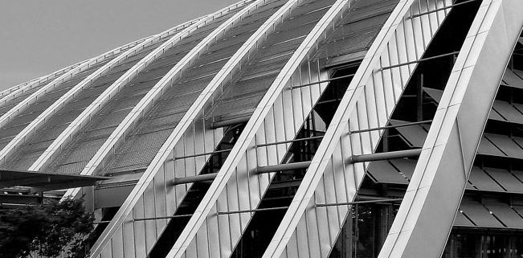

Introduction
In July 2018, a team of five students worked together with a coach on the project Open Flandria. This project is a part of the program called Open Summer of Code. In 2018, more than 70 students decided to participate in this program. In total, they worked on 17 projects.
Description
Open Flandria is a website where you can access a digital gallery with the open source images of sustainable housing and living. This platform was created with the help of Slim Wonen en Leven and captures the real and existing solutions for sustainable living in Flanders. The users of the website will be able to download the images without creating an account. All the images are free to download and to reuse.
However, for the registered users it will be also possible to save the pictures in the custom galleries or folders. This digital gallery is meant to be used to bring awareness to the topic and for educational purposes.
The goal
The goal of our project is to provide people with the open source images of sustainable housing and living. We want to make sure that in the future this platform will allow the users to freely and without registration download and reuse those images. We wanted to create the easy-to-use website which would clear to the (potential) users.
Our mission is to provide attractive and high-quality images that can become a reference to everyone who is interested in the subject of sustainability and alternative ways of living.
Our target audience
Our persona is someone who wants to bring awareness about sustainable living and housing in Flanders and to show others what projects already have been created. This platform is for everyone who needs to use the free stock images of eco-friendly living in Flanders.
Rights to download, copy and reuse the photos
There are four types of the licenses, or we call them rights, that are used on the platform.
Public Domain Mark 1.0 and CC00 The user can copy, modify, distribute and perform the work without permission, even for commercial purposes. You don’t need to attribute the work, but it is nice if you indicate Open Flandria as the source.
CC BY The user can share the material in any medium or format and adapt for any purpose including commercially as long as credits are provided.
CC BY-SA The user is allowed to freely share the material in any medium or format and adapt for any purpose including commercially as longa s credits are provided. Derivative work has to be published with the same license as the original work.
The team
- Gwen Franck- coach
- Julija Kolenceva - communication
- Smay Song - designer
- Kevin Schroeder - front-end developer
- Mohanand Abou Zaidi - back-end developer
- Brysen Ackx - back-end developer
The partners
-
Slim Wonen en Leven
https://www.vlaanderen.be/nl/vlaamse-regering/visie-2050/slim-wonen-en-leven -
Vlaanderen omgeving department
https://www.omgevingvlaanderen.be/